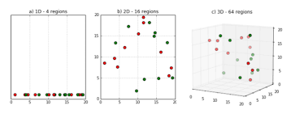

특성의 수가 증가할수록 데이터 공간의 부피가 기하급수적으로 커져 데이터의 밀도가 희소(sparse)해집니다. 이로 인해:
모델이 데이터의 패턴을 학습하기 어려워집니다.
과적합의 위험이 커집니다.
모델 학습에 필요한 계산량이 증가하여 시간과 자원 소모가 커집니다.
3차원을 초과하는 데이터는 직관적인 시각화가 불가능합니다.
차원 축소의 역할
모델 성능 향상: 데이터의 본질적인 구조는 최대한 유지하면서 특성(feature) 수를 줄여 과적합을 방지하고 학습 속도를 높입니다.
데이터 시각화: 고차원 데이터를 2차원이나 3차원으로 줄여 직관적인 시각화가 가능하도록 합니다.
계산 효율성: 저차원 데이터로 변환하여 모델 학습과 예측의 계산 복잡도를 감소시킵니다.
데이터의 내재적 패턴 파악: 차원 축소는 데이터의 클러스터링 구조와 같은 내재적 패턴을 더 쉽게 드러내어 분석에 도움이 됩니다.

키 포인트
차원 축소는 '차원의 저주(Curse of Dimensionality)'를 해결하기 위해 데이터의 본질적인 구조는 최대한 유지하면서, 원본 데이터의 특성(feature) 수를 줄이는 기법입니다. 이를 통해 모델의 학습 속도를 높이고 과적합을 방지하며, 데이터의 내재적 패턴을 더 쉽게 파악할 수 있습니다.